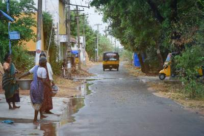

New order
The emerging new world order is here, the tipping point where we are entering a phase of technology, that should have human systems, chaos and order, these technology should be based and developed on these fundamentals The fundamental are clear, Carbon neutral, privacy preserving , promotes health and able to provide financial soverigneity.
Muellners manifesto
